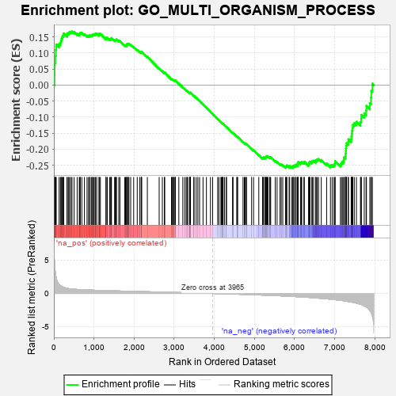
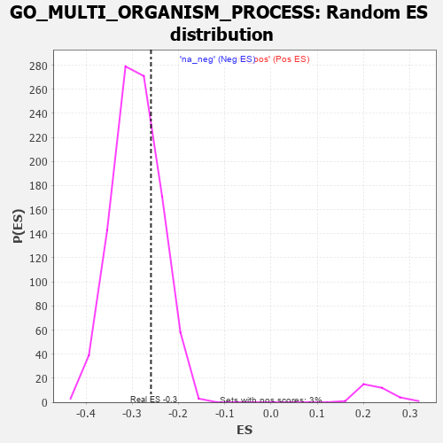

| | | Dataset | 7d |
| Phenotype | NoPhenotypeAvailable |
| Upregulated in class | na_neg |
| GeneSet | GO_MULTI_ORGANISM_PROCESS |
| Enrichment Score (ES) | -0.259482 |
| Normalized Enrichment Score (NES) | -0.88928103 |
| Nominal p-value | 0.7373319 |
| FDR q-value | 0.95932436 |
| FWER p-Value | 1.0 |
Table: GSEA Results Summary

Fig 1: Enrichment plot: GO_MULTI_ORGANISM_PROCESS
Profile of the Running ES Score & Positions of GeneSet Members on the Rank Ordered List
| PROBE | GENE SYMBOL | GENE_TITLE | RANK IN GENE LIST | RANK METRIC SCORE | RUNNING ES | CORE ENRICHMENT | | 1 | HMX3 | | | 17 | 4.775 | 0.0333 | No |
| 2 | H2AX | | | 20 | 4.738 | 0.0683 | No |
| 3 | SPO11 | | | 35 | 3.371 | 0.0916 | No |
| 4 | TGFB3 | | | 49 | 2.654 | 0.1096 | No |
| 5 | MAST2 | | | 59 | 2.459 | 0.1268 | No |
| 6 | SP3 | | | 131 | 1.391 | 0.1280 | No |
| 7 | TEX14 | | | 164 | 1.179 | 0.1326 | No |
| 8 | PZP | | | 178 | 1.129 | 0.1393 | No |
| 9 | TPPP3 | | | 195 | 1.079 | 0.1453 | No |
| 10 | SPDYA | | | 211 | 1.026 | 0.1510 | No |
| 11 | SMAD5 | | | 231 | 0.979 | 0.1558 | No |
| 12 | CIP2A | | | 246 | 0.945 | 0.1610 | No |
| 13 | NUP85 | | | 329 | 0.772 | 0.1562 | No |
| 14 | WEE2 | | | 333 | 0.766 | 0.1615 | No |
| 15 | LARP7 | | | 369 | 0.731 | 0.1625 | No |
| 16 | BAX | | | 387 | 0.711 | 0.1655 | No |
| 17 | MLH1 | | | 423 | 0.679 | 0.1661 | No |
| 18 | ERCC1 | | | 453 | 0.660 | 0.1673 | No |
| 19 | NUP54 | | | 505 | 0.627 | 0.1653 | No |
| 20 | CCNB1 | | | 581 | 0.601 | 0.1601 | No |
| 21 | AURKC | | | 633 | 0.583 | 0.1579 | No |
| 22 | MCM8 | | | 646 | 0.578 | 0.1607 | No |
| 23 | PARN | | | 660 | 0.572 | 0.1632 | No |
| 24 | FST | | | 698 | 0.560 | 0.1626 | No |
| 25 | TDRD9 | | | 761 | 0.542 | 0.1587 | No |
| 26 | RAE1 | | | 827 | 0.524 | 0.1542 | No |
| 27 | ASF1B | | | 863 | 0.515 | 0.1535 | No |
| 28 | HMGB2 | | | 892 | 0.507 | 0.1537 | No |
| 29 | NSUN2 | | | 901 | 0.506 | 0.1564 | No |
| 30 | TDRD7 | | | 936 | 0.498 | 0.1557 | No |
| 31 | RNF17 | | | 965 | 0.491 | 0.1558 | No |
| 32 | WDR48 | | | 975 | 0.489 | 0.1582 | No |
| 33 | MEN1 | | | 1003 | 0.483 | 0.1583 | No |
| 34 | REC8 | | | 1028 | 0.478 | 0.1588 | No |
| 35 | AKT1 | | | 1040 | 0.476 | 0.1609 | No |
| 36 | NDRG3 | | | 1068 | 0.470 | 0.1609 | No |
| 37 | NUP93 | | | 1127 | 0.459 | 0.1569 | No |
| 38 | SRC | | | 1128 | 0.459 | 0.1603 | No |
| 39 | NUP43 | | | 1160 | 0.453 | 0.1597 | No |
| 40 | SCMH1 | | | 1300 | 0.428 | 0.1449 | No |
| 41 | FKBP6 | | | 1301 | 0.428 | 0.1481 | No |
| 42 | UBR2 | | | 1334 | 0.423 | 0.1471 | No |
| 43 | FKBP4 | | | 1390 | 0.412 | 0.1431 | No |
| 44 | P2RY1 | | | 1416 | 0.407 | 0.1429 | No |
| 45 | NUP88 | | | 1429 | 0.404 | 0.1443 | No |
| 46 | DDX4 | | | 1436 | 0.403 | 0.1466 | No |
| 47 | INHBB | | | 1514 | 0.388 | 0.1395 | No |
| 48 | TDRD5 | | | 1528 | 0.387 | 0.1407 | No |
| 49 | SOS1 | | | 1547 | 0.384 | 0.1413 | No |
| 50 | BOLL | | | 1561 | 0.381 | 0.1424 | No |
| 51 | KDM1B | | | 1618 | 0.371 | 0.1380 | No |
| 52 | RXRA | | | 1647 | 0.365 | 0.1371 | No |
| 53 | AGO2 | | | 1767 | 0.343 | 0.1243 | No |
| 54 | NUP58 | | | 1787 | 0.340 | 0.1243 | No |
| 55 | FMR1 | | | 1816 | 0.334 | 0.1232 | No |
| 56 | MSH2 | | | 1819 | 0.334 | 0.1254 | No |
| 57 | SGPL1 | | | 1820 | 0.334 | 0.1279 | No |
| 58 | TDRKH | | | 1836 | 0.331 | 0.1285 | No |
| 59 | SMAD4 | | | 1860 | 0.326 | 0.1279 | No |
| 60 | NUP62 | | | 1871 | 0.324 | 0.1290 | No |
| 61 | DDX6 | | | 1915 | 0.318 | 0.1258 | No |
| 62 | GPX4 | | | 1989 | 0.306 | 0.1187 | No |
| 63 | KDM3A | | | 2078 | 0.294 | 0.1096 | No |
| 64 | PSME4 | | | 2143 | 0.285 | 0.1034 | No |
| 65 | DDR1 | | | 2176 | 0.280 | 0.1014 | No |
| 66 | UBE2A | | | 2183 | 0.278 | 0.1027 | No |
| 67 | C1QBP | | | 2189 | 0.278 | 0.1041 | No |
| 68 | SEC13 | | | 2330 | 0.256 | 0.0880 | No |
| 69 | NUP50 | | | 2625 | 0.209 | 0.0516 | No |
| 70 | MARF1 | | | 2704 | 0.198 | 0.0430 | No |
| 71 | PPIA | | | 2754 | 0.190 | 0.0381 | No |
| 72 | TTLL1 | | | 2764 | 0.189 | 0.0384 | No |
| 73 | ACVR1 | | | 2932 | 0.161 | 0.0180 | No |
| 74 | NMT2 | | | 2947 | 0.158 | 0.0174 | No |
| 75 | XPO1 | | | 2960 | 0.156 | 0.0170 | No |
| 76 | PCSK5 | | | 2983 | 0.152 | 0.0153 | No |
| 77 | AZIN2 | | | 2993 | 0.150 | 0.0153 | No |
| 78 | WNT4 | | | 3023 | 0.146 | 0.0126 | No |
| 79 | BRCA2 | | | 3024 | 0.146 | 0.0137 | No |
| 80 | BRDT | | | 3028 | 0.145 | 0.0144 | No |
| 81 | SYT8 | | | 3115 | 0.135 | 0.0043 | No |
| 82 | PRDX4 | | | 3214 | 0.120 | -0.0074 | No |
| 83 | NUP98 | | | 3261 | 0.112 | -0.0125 | No |
| 84 | ASZ1 | | | 3299 | 0.106 | -0.0165 | No |
| 85 | TDRD1 | | | 3321 | 0.101 | -0.0185 | No |
| 86 | SMAD1 | | | 3337 | 0.099 | -0.0197 | No |
| 87 | PPAT | | | 3382 | 0.091 | -0.0247 | No |
| 88 | DDX3X | | | 3388 | 0.091 | -0.0246 | No |
| 89 | GAS2 | | | 3392 | 0.090 | -0.0244 | No |
| 90 | TUT4 | | | 3394 | 0.090 | -0.0238 | No |
| 91 | TESK2 | | | 3401 | 0.089 | -0.0239 | No |
| 92 | MED1 | | | 3405 | 0.089 | -0.0237 | No |
| 93 | GLI1 | | | 3489 | 0.079 | -0.0338 | No |
| 94 | TBP | | | 3493 | 0.078 | -0.0336 | No |
| 95 | DMRT1 | | | 3546 | 0.068 | -0.0398 | No |
| 96 | MAPK3 | | | 3589 | 0.062 | -0.0447 | No |
| 97 | ACSL4 | | | 3632 | 0.055 | -0.0497 | No |
| 98 | HSF1 | | | 3718 | 0.039 | -0.0604 | No |
| 99 | VMP1 | | | 3803 | 0.027 | -0.0710 | No |
| 100 | JAG2 | | | 3903 | 0.010 | -0.0837 | No |
| 101 | GLRA1 | | | 3957 | 0.001 | -0.0905 | No |
| 102 | DDX20 | | | 4083 | -0.021 | -0.1065 | No |
| 103 | MTOR | | | 4114 | -0.025 | -0.1102 | No |
| 104 | MCM9 | | | 4163 | -0.036 | -0.1161 | No |
| 105 | MSH4 | | | 4176 | -0.038 | -0.1174 | No |
| 106 | GGT7 | | | 4200 | -0.041 | -0.1200 | No |
| 107 | TAF7L | | | 4205 | -0.042 | -0.1202 | No |
| 108 | TIMP1 | | | 4209 | -0.043 | -0.1203 | No |
| 109 | DDX3Y | | | 4219 | -0.045 | -0.1211 | No |
| 110 | PAX5 | | | 4255 | -0.051 | -0.1253 | No |
| 111 | RAN | | | 4299 | -0.059 | -0.1304 | No |
| 112 | HERC2 | | | 4302 | -0.060 | -0.1302 | No |
| 113 | SPAG1 | | | 4453 | -0.085 | -0.1489 | No |
| 114 | LRRK2 | | | 4467 | -0.087 | -0.1499 | No |
| 115 | STX2 | | | 4562 | -0.108 | -0.1612 | No |
| 116 | BAG6 | | | 4563 | -0.108 | -0.1604 | No |
| 117 | VPS28 | | | 4582 | -0.114 | -0.1619 | No |
| 118 | PI4KA | | | 4715 | -0.143 | -0.1779 | No |
| 119 | FBLN1 | | | 4748 | -0.149 | -0.1809 | No |
| 120 | POC1A | | | 4768 | -0.151 | -0.1822 | No |
| 121 | PLD6 | | | 4799 | -0.157 | -0.1849 | No |
| 122 | TPPP2 | | | 4800 | -0.157 | -0.1837 | No |
| 123 | ATRX | | | 4929 | -0.184 | -0.1989 | No |
| 124 | OSBP2 | | | 4978 | -0.193 | -0.2036 | No |
| 125 | MMP9 | | | 5108 | -0.227 | -0.2186 | No |
| 126 | ASH1L | | | 5203 | -0.248 | -0.2288 | No |
| 127 | ATM | | | 5210 | -0.249 | -0.2278 | No |
| 128 | TOP2A | | | 5216 | -0.250 | -0.2265 | No |
| 129 | TMF1 | | | 5225 | -0.251 | -0.2257 | No |
| 130 | PTEN | | | 5262 | -0.261 | -0.2284 | No |
| 131 | CDK1 | | | 5264 | -0.262 | -0.2266 | No |
| 132 | PICK1 | | | 5265 | -0.263 | -0.2246 | No |
| 133 | CELF4 | | | 5275 | -0.266 | -0.2238 | No |
| 134 | RAB7A | | | 5302 | -0.271 | -0.2252 | No |
| 135 | EPN1 | | | 5304 | -0.272 | -0.2233 | No |
| 136 | CD9 | | | 5319 | -0.277 | -0.2230 | No |
| 137 | TOB2 | | | 5337 | -0.282 | -0.2231 | No |
| 138 | GRIN1 | | | 5381 | -0.291 | -0.2265 | No |
| 139 | PRDX3 | | | 5389 | -0.293 | -0.2252 | No |
| 140 | SOX8 | | | 5404 | -0.296 | -0.2248 | No |
| 141 | VDR | | | 5517 | -0.325 | -0.2368 | No |
| 142 | FOLR2 | | | 5563 | -0.336 | -0.2401 | No |
| 143 | ASPM | | | 5637 | -0.358 | -0.2469 | No |
| 144 | MEIOB | | | 5667 | -0.366 | -0.2479 | No |
| 145 | PRLHR | | | 5705 | -0.377 | -0.2499 | No |
| 146 | GLRB | | | 5776 | -0.398 | -0.2559 | No |
| 147 | TRPC6 | | | 5784 | -0.401 | -0.2539 | No |
| 148 | ADA | | | 5798 | -0.405 | -0.2525 | No |
| 149 | BBS4 | | | 5806 | -0.407 | -0.2504 | No |
| 150 | MEIG1 | | | 5866 | -0.423 | -0.2548 | No |
| 151 | CDK16 | | | 5869 | -0.425 | -0.2519 | No |
| 152 | STK11 | | | 5922 | -0.443 | -0.2554 | No |
| 153 | AGFG1 | | | 5955 | -0.457 | -0.2561 | Yes |
| 154 | PRDM1 | | | 5956 | -0.457 | -0.2527 | Yes |
| 155 | MORN2 | | | 5981 | -0.465 | -0.2523 | Yes |
| 156 | TUT7 | | | 5997 | -0.471 | -0.2507 | Yes |
| 157 | HVCN1 | | | 6034 | -0.482 | -0.2518 | Yes |
| 158 | TRPC3 | | | 6035 | -0.483 | -0.2482 | Yes |
| 159 | USP9Y | | | 6075 | -0.498 | -0.2495 | Yes |
| 160 | CALR | | | 6077 | -0.499 | -0.2460 | Yes |
| 161 | PLK1 | | | 6082 | -0.500 | -0.2428 | Yes |
| 162 | UBB | | | 6090 | -0.503 | -0.2399 | Yes |
| 163 | RNF8 | | | 6147 | -0.518 | -0.2433 | Yes |
| 164 | GOPC | | | 6167 | -0.528 | -0.2418 | Yes |
| 165 | THRB | | | 6178 | -0.531 | -0.2391 | Yes |
| 166 | RGN | | | 6233 | -0.547 | -0.2420 | Yes |
| 167 | VDAC2 | | | 6242 | -0.553 | -0.2390 | Yes |
| 168 | IFT27 | | | 6348 | -0.596 | -0.2481 | Yes |
| 169 | ARMC2 | | | 6363 | -0.602 | -0.2454 | Yes |
| 170 | BIRC3 | | | 6366 | -0.603 | -0.2412 | Yes |
| 171 | BBS2 | | | 6383 | -0.608 | -0.2387 | Yes |
| 172 | HERC4 | | | 6429 | -0.631 | -0.2398 | Yes |
| 173 | UMPS | | | 6442 | -0.637 | -0.2366 | Yes |
| 174 | CELF3 | | | 6475 | -0.651 | -0.2359 | Yes |
| 175 | ACE | | | 6526 | -0.674 | -0.2373 | Yes |
| 176 | M1AP | | | 6537 | -0.680 | -0.2336 | Yes |
| 177 | MYCBP | | | 6566 | -0.693 | -0.2320 | Yes |
| 178 | TPR | | | 6597 | -0.709 | -0.2306 | Yes |
| 179 | TMED2 | | | 6665 | -0.746 | -0.2337 | Yes |
| 180 | TBPL1 | | | 6798 | -0.814 | -0.2447 | Yes |
| 181 | HEXB | | | 6894 | -0.864 | -0.2505 | Yes |
| 182 | GHSR | | | 6937 | -0.894 | -0.2493 | Yes |
| 183 | PLB1 | | | 6983 | -0.925 | -0.2482 | Yes |
| 184 | PACRG | | | 7007 | -0.940 | -0.2442 | Yes |
| 185 | DZIP1 | | | 7009 | -0.940 | -0.2373 | Yes |
| 186 | CFTR | | | 7143 | -1.030 | -0.2468 | Yes |
| 187 | AR | | | 7169 | -1.046 | -0.2422 | Yes |
| 188 | CETN2 | | | 7200 | -1.070 | -0.2382 | Yes |
| 189 | LRGUK | | | 7229 | -1.101 | -0.2336 | Yes |
| 190 | RSPH1 | | | 7231 | -1.101 | -0.2255 | Yes |
| 191 | ENDOU | | | 7268 | -1.139 | -0.2217 | Yes |
| 192 | QKI | | | 7272 | -1.145 | -0.2136 | Yes |
| 193 | IFT81 | | | 7277 | -1.151 | -0.2055 | Yes |
| 194 | CIB1 | | | 7280 | -1.152 | -0.1972 | Yes |
| 195 | ASTL | | | 7290 | -1.159 | -0.1897 | Yes |
| 196 | SYCP1 | | | 7295 | -1.167 | -0.1816 | Yes |
| 197 | SPAG8 | | | 7337 | -1.211 | -0.1778 | Yes |
| 198 | OVOL1 | | | 7341 | -1.214 | -0.1692 | Yes |
| 199 | UBC | | | 7410 | -1.274 | -0.1685 | Yes |
| 200 | SPEF2 | | | 7418 | -1.289 | -0.1598 | Yes |
| 201 | SPAG6 | | | 7426 | -1.302 | -0.1510 | Yes |
| 202 | MMP19 | | | 7433 | -1.309 | -0.1421 | Yes |
| 203 | GGT1 | | | 7447 | -1.329 | -0.1339 | Yes |
| 204 | RAI14 | | | 7450 | -1.337 | -0.1242 | Yes |
| 205 | XRN2 | | | 7488 | -1.384 | -0.1187 | Yes |
| 206 | IQCG | | | 7541 | -1.455 | -0.1145 | Yes |
| 207 | MNS1 | | | 7642 | -1.633 | -0.1153 | Yes |
| 208 | TEKT3 | | | 7658 | -1.657 | -0.1049 | Yes |
| 209 | CNBD2 | | | 7663 | -1.670 | -0.0930 | Yes |
| 210 | PANK2 | | | 7736 | -1.866 | -0.0884 | Yes |
| 211 | SYNE1 | | | 7782 | -2.011 | -0.0792 | Yes |
| 212 | NPHP1 | | | 7791 | -2.041 | -0.0651 | Yes |
| 213 | MMP2 | | | 7875 | -2.574 | -0.0566 | Yes |
| 214 | PLCB1 | | | 7904 | -2.841 | -0.0391 | Yes |
| 215 | ZAN | | | 7912 | -2.932 | -0.0182 | Yes |
| 216 | WDR33 | | | 7939 | -3.452 | 0.0041 | Yes |
Table: GSEA details [plain text format]

Fig 2: GO_MULTI_ORGANISM_PROCESS: Random ES distribution
Gene set null distribution of ES for GO_MULTI_ORGANISM_PROCESS